PAGINA WEB DE CHICHANDE COELLO
HECHA UN VISTASO A MI PAGINA WEB
Bienvenido a mi pagina web , esta pagina esta hecho para el material escolar para mostrar el uso de materiales de Diseño WEB, ¿Que es el diseño web? El diseño web es un área enfocada en el desarrollo de interfaces digitales, como el diseño de sitios y aplicaciones para web. Para ello, los diseñadores web crean las páginas utilizando lenguajes de marcado como HTML. ... Para que no suceda con el sitio web de tu empresa, debes tener un diseño web de calidad
Conceptos Basicos De Web
HTML
El Lenguaje de Marcado de Hipertexto (HTML) es el código que se utiliza para estructurar y desplegar una página web y sus contenidos. Por ejemplo, sus contenidos podrían ser párrafos, una lista con viñetas, o imágenes y tablas de datos
HTML son las siglas en inglés para Hypertext Markup Language, que se traduce como lenguaje de marcación de hipertexto.
A pesar de tener un nombre complicado, el HTML no es más que un lenguaje usado para crear páginas webs por medio de marcadores (tags) y atributos, que definen cómo el contenido va a ser presentado en un navegador web.
Las páginas web son herramientas de divulgación de información con múltiples fines: desde brindar conocimiento, hasta generar oportunidades de negocio. Sea cual sea el propósito de la tuya, todas ellas tienen en común un lenguaje con el cual son construidas: el HTML.
El HTML es un lenguaje de marcación de elementos para la creación de documentos hipertexto, muy fácil de aprender, lo que permite que cualquier persona, aunque no haya programado en la vida, pueda enfrentarse a la tarea de crear una web. HTML es fácil y pronto podremos dominar el lenguaje. Más adelante se conseguirán los resultados profesionales gracias a nuestras capacidades para el diseño y nuestra vena artista, así como a la incorporación de otros lenguajes para definir el formato con el que se tienen que presentar las webs, como CSS.
Una vez conocemos el concepto de HTML os vamos a adelantar algunas cosas más. Este lenguaje se escribe en un documento de texto, por eso necesitamos un editor de textos para escribir una página web. Así pues, el archivo donde está contenido el código HTML es un archivo de texto, con una peculiaridad, que tiene extensión .html o .htm (es indiferente cuál utilizar). De modo que cuando programemos en HTML lo haremos con un editor de textos, lo más sencillo posible y guardaremos nuestros trabajos con extensión .html, por ejemplo mipagina.html

paginas Web
Se conoce como página web al documento que forma parte de un sitio web y que suele contar con enlaces (también conocidos como hipervínculos o links) para facilitar la navegación entre los contenidos.
Las páginas web están desarrolladas con lenguajes de marcado como el HTML, que pueden ser interpretados por los navegadores. De esta forma, las páginas pueden presentar información en distintos formatos (texto, imágenes, sonidos, videos, animaciones), estar asociadas a datos de estilo o contar con aplicaciones interactivas.
Entre las múltiples características que tiene una página web y que sirven para identificarla se encuentran las siguientes: cuenta con información textual y también con material de tipo audiovisual, está dotada de un diseño atractivo, está optimizada y ejerce como la tarjeta de presentación de una empresa, una persona o un profesional concreto.
Creación de páginas web
En los últimos años, dado el avance y presencia que tiene Internet en nuestras vidas, muchas son las empresas que se han puesto en marcha y han creado su página web. Y es que han descubierto que la misma les sirve para darse a conocer al mundo, para conseguir captar nuevos clientes y, por tanto, para mejorar sus resultados económicos.
En este sentido, es importante saber que para poder conseguir que dicho espacio en la Red sea absolutamente efectivo y permita alcanzar los citados objetivos hay que tener en cuenta una serie de criterios fundamentales:
Tiene que tener un diseño atractivo para poder llamar la atención del usuario y conseguir que navegue por ella. En este sentido, ese atractivo se conseguirá ofreciendo información de calidad así como materiales de diversa índole tales como animaciones, vídeos, imágenes
Es vital que se realice con ella las consabidas tareas de estrategia SEO y de optimización. Sólo de esa manera se logrará que la misma sea visible y conocida
Tiene que incluir enlaces tanto a distintos apartados de la misma página web como a otros espacios que pueden resultar de gran interés para el usuario.
paginas Dinamicas
Los sitios web dinámicos son aquellos que permiten crear aplicaciones dentro de la propia web, otorgando una mayor interactividad con el navegante. Aplicaciones dinámicas como encuestas y votaciones, noticiarios, foros de soporte, libros de visita, envío de e-mails inteligentes, reserva de productos, pedidos on-line, atención al cliente personalizada ... donde el administrador dispone la opción de gestionar dichos apartados, agregando, editando o eliminando contenidos.
La gran ventaja de los sitio web dinámicos es la versatilidad, apunta a la personalización de la información mostrada. Permite la toma de decisiones y muestra selectiva de información en función de criterios deseados.
Es útil para mostrar una imagen de empresa más sólida y profesional ya que permite guardar información en la computadora del navegante y mostrar en forma personalizada la página web de la empresa así como la información adecuada al tipo de navegante.
Una página web dinámica es una página web generada bajo demanda, a diferencia de una página web estática. Su contenido varía en función de los datos como la hora, el nombre del usuario, las preferencias fijadas por el usuario, etc., que no son conocidos hasta el momento en que el usuario solicita la página.
Una página web dinámica es una página web en la que el contenido cambia según determinadas condiciones, bien sean interacción con la página o la identificación de un usuario determinado.
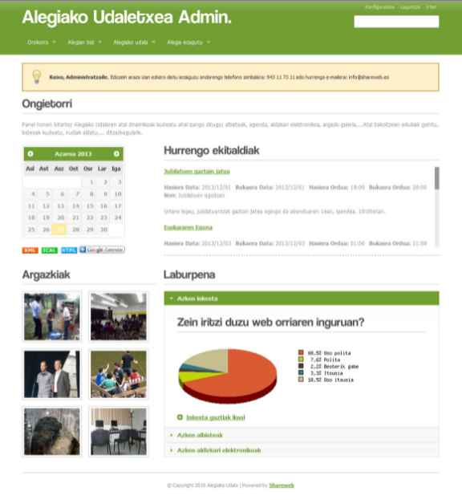
paginas Estaticas
Una página web estática (a veces llamada página plana o página estacionaria) es una página web que se entrega al navegador del usuario exactamente como está almacenada, en contraste con las páginas web dinámicas que son generadas por una aplicación web.
En consecuencia, una página web estática muestra la misma información para todos los usuarios, de todos los contextos, con sujeción a las capacidades modernas de un servidor web para negociar el tipo de contenido o el idioma del documento cuando esas versiones están disponibles y el servidor está configurado para hacerlo
Las páginas web estáticas suelen ser documentos HTML4 almacenados como archivos en el sistema de archivos y puestos a disposición por el servidor web a través de HTTP (no obstante, las direcciones URL que terminan en ".html" no siempre son estáticas). Sin embargo, las interpretaciones laxas del término podrían incluir páginas web almacenadas en una base de datos, e incluso podrían incluir páginas formateadas utilizando una plantilla y servidas a través de un servidor de aplicaciones, siempre que la página servida no cambie y se presente esencialmente como almacenada.
Las páginas web estáticas son adecuadas para contenidos que nunca o rara vez necesitan ser actualizados, aunque los modernos sistemas de plantillas web están cambiando esto. El mantenimiento de un gran número de páginas estáticas como archivos puede ser poco práctico sin herramientas automatizadas, como los generadores de sitios estáticos. Otra forma de gestionar las páginas estáticas son los parques de código fuente compilado en línea, por ejemplo, GatsbyJS y GitHub pueden utilizarse para migrar un sitio de WordPress a páginas web estáticas.5 Cualquier personalización o interactividad tiene que funcionar del lado del cliente, lo cual es restrictivo
Ventajas de un sitio web estático
Proporciona una mayor seguridad en los sitios web dinámicos (los sitios web dinámicos corren el riesgo de sufrir ataques de web shell si existe una vulnerabilidad)
Mejor rendimiento para los usuarios finales en comparación con los sitios web dinámicos
Menos o ninguna dependencia de sistemas como bases de datos u otros servidores de aplicación

Protocolos Ip
La idea de dirección puede referirse a un domicilio. En el caso específico de la informática, se trata de una expresión compuesta por letras y/o números que alude a una localización en la memoria de un equipo informático. IP, por su parte, es la sigla inglesa que alude a Internet Protocol (“Protocolo de Internet”).
Una dirección IP, en este marco, es un número que permite la identificación de una interfaz en red de una computadora (ordenador), un teléfono inteligente u otro dispositivo que usa el mencionado protocolo. Esta dirección puede ser estática o dinámica.
Puede decirse que la dirección IP es la identificación que posibilita a los dispositivos informáticos conectarse entre sí. Aquellos que necesitan una conexión permanente requieren una dirección IP estática (fija) para que puedan ser localizados en la red: un servidor que aloja un sitio web, un servidor de correo electrónico, etc. Para que los usuarios puedan recordar la localización de los sitios en Internet, se utilizan nombres de dominio que están vinculados a las direcciones IP.
Un equipo al que se le asigna una dirección IP dinámica, en cambio, no cuenta con un número fijo. Por eso la identificación en cuestión cambia de manera periódica.
Puede entenderse a la dirección IP, en definitiva, como una etiqueta que identifica a la interfaz de un dispositivo en una red que se rige por el protocolo IP. Estas identificaciones, en la actualidad, se componen de cuatro bloques numéricos, cada uno formado por números del 0 al 255. Por ejemplo: 205.45.128.30 podría ser una dirección IP.
Además de todo lo establecido, no podemos pasar por alto otra serie de singularidades y aspectos importantes sobre la mencionada dirección IP como son los siguientes:
-Nadie puede proceder a navegar por la Red sin una IP.
-De la misma manera, hay que establecer que ninguna página web
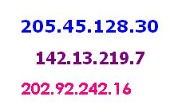
Navegadores
Un browser es un navegador de Internet: un software que permite la visualización de los contenidos que presenta una página web. Este tipo de programa informático dispone de las herramientas que se necesitan para la interpretación del código de una página, que puede estar compuesto por uno o más lenguajes de programación
Gracias al uso de un browser, por lo tanto, una persona puede acceder a la información de las páginas web e interactuar con ella. La navegación virtual se vuelve posible mediante los enlaces (también llamados links o hipervínculos) que hacen que el usuario pueda pasar de un sitio web a otro, o bien de una a otra página dentro del mismo sitio.
En un primer momento, los browsers solo existían en las computadoras (ordenadores). Con el paso de los años, muchos otros dispositivos comenzaron a tener conexión a Internet por medio de este tipo de programas. De este modo, los teléfonos celulares (móviles), los televisores, las tabletas y las consolas de videojuegos, entre otros aparatos, empezaron a incluir un browser de forma predeterminada.
Google Chrome es uno de los browsers más utilizados en el mundo. Desarrollado por Google, fue lanzado en 2008 y tiene más de 750 millones de usuarios en todo el planeta. Se trata de un navegador que apuesta por la estabilidad, la velocidad y la seguridad.
Otro browser muy popular es Internet Explorer, creado por Microsoft en 1995. Hasta la aparición de Chrome, de hecho, era el navegador más usado.
Mozilla Firefox (un desarrollo de la fundación y la corporación Mozilla) y Opera (producto de Opera Software) son otros browsers que están instalados en millones de computadoras. Cabe destacar que la mayoría de los browsers existentes pueden descargarse de manera gratuita.
Hasta cierto punto, la elección del browser tiene lugar por cuestión de gustos, así como la mayoría de los programas y servicios ofrecidos en Internet; ya sea por costumbre (si fue el primer navegador que usamos en nuestra vida) o por la comodidad que nos brinda para realizar nuestras actividades favoritas, la mayoría de los usuarios se fijan en los aspectos más superficiales para tomar su decisión.
Sin embargo, los usuarios expertos esperan mucho más de un browser que la mera posibilidad de cargar sus casillas de correo electrónico y sus perfiles en las redes sociales. Esto programas deben estar preparados para reproducir de forma eficiente una amplia variedad de contenido programado en diferentes lenguajes, por lo cual la compatibilidad es un aspecto que determina la calidad del browser a cada momento.
Hojas de estilo
Las hojas de estilo (style sheets) son conjuntos de instrucciones, a veces en forma de archivo anexo, que se asocian a los archivos de texto y se ocupan de los aspectos de formato y de presentación de los contenidos: tipo, fuente y tamaño de letras, alineación y posicionamiento del texto, colores y fondos, etc. Las hojas de estilo permiten liberar la composición del texto de los aspectos visuales y favorecen que se estructure y anote mediante códigos que permiten un tratamiento más eficaz de los contenidos. El uso adecuado de las hojas de estilo es uno de los aspectos clave de la edición digital. Las hojas de estilo son una herramienta de gran utilidad de los programas de tratamiento de textos, como OpenOffice.org o Microsoft Word. Asimismo, constituyen una parte esencial de los lenguajes de marcas para edición digital: LaTeX, XML y XHTML. Dos lenguajes de hojas de estilo son CSS y XSL.
Las hojas de estilo representan un avance importante para los diseñadores de páginas web, al darles un mayor rango de posibilidades para mejorar la apariencia de sus páginas. En los entornos científicos en que la Web fue concebida, la gente estaba más preocupada por el contenido de sus páginas que por su presentación. A medida que la Web era descubierta por un espectro mayor de personas de distintas procedencias, las limitaciones del HTML se convirtieron en fuente de continua frustración, y los autores se vieron forzados a superar las limitaciones estilísticas del HTML. Aunque las intenciones han sido buenas -- mejorar la presentación de las páginas web --, las técnicas para conseguirlo han tenido efectos secundarios negativos. Entre estas técnicas, que dan buenos resultados para algunas personas, algunas veces, pero no siempre ni para todas las personas, se incluyen:
La utilización de extensiones propietarias del HTML
Conversión del texto en imágenes
Utilización de imágenes para controlar el espacio en blanco
La utilización de tablas para la organización de las páginas
Escribir programas en lugar de usar HTML
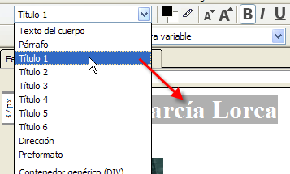
Tablas
Una tabla es un conjunto estructurado de datos distribuidos en filas y columnas (datos tabulados). Una tabla permite buscar con rapidez y facilidad valores entre diferentes tipos de datos que indiquen algún tipo de conexión. Por ejemplo, una persona y su edad, o un día de la semana o el horario de una piscina municipal.
Una tabla es una disposición de datos en filas y columnas, o en algunas ocasiones en una estructura más compleja. Son ampliamente utilizadas en comunicación, investigación y análisis de datos. Aparecen en medios impresos, notas escritas a mano, software de computadora, señales de tráfico y muchos otros lugares
Las tablas más sencillas de HTML se definen con tres etiquetas: table para crear la tabla, tr para crear cada fila y td para crear cada columna. La etiqueta table encierra todas las filas y columnas de la tabla./p
Atributos para tablas HTML
align: Alinea horizontalmente la tabla con respecto a su entorno.
background: Nos permite colocar un fondo para la tabla a partir de un enlace a una imagen.
bgcolor: Da color de fondo a la tabla.
border: Define el número de pixels del borde principal.
bordercolor: Define el color del borde.
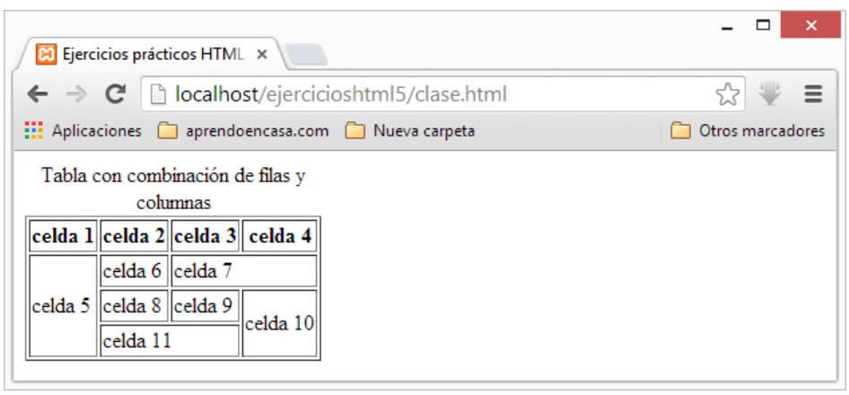
Plantillas
Una plantilla es un tipo especial de documento que sirve para crear un diseño de página “fijo”; puede crear documentos basados en la plantilla que heredan su diseño de página. Al diseñar una plantilla, usted especifica como “editables” aquellos contenidos de un documento basado en dicha plantilla que los usuarios pueden editar. Las plantillas permiten a los autores controlar qué elementos de la página pueden editar los usuarios de la plantilla (como los redactores, los diseñadores gráficos y otros desarrolladores Web). El autor de una plantilla puede incluir varios tipos de regiones de plantilla en un documento.
Una plantilla (template o theme, en inglés) es una página web prediseñada a la cual se puede modificar el texto, las fotos, los colores, el logotipo y la información de contacto. Son diseños realizados por empresas o diseñadores/programadores, que se venden en masa a precios bajos (incluso existen gratuitas) y son populares porque generalmente son sencillas de usar, creando una página web completa en unos cuantos días.
Ventajas de usar una plantilla
· Fácil uso
Generalmente para utilizar una plantilla no se necesita de muchos conocimientos de informática y la mayoría de ellas son diseñadas de manera amigable, de modo que tareas comunes como cambiar el texto, agregar fotos, videos y redes sociales o cambiar los colores de la página web es tan sencillo como utilizar Facebook.
· Bajo costo
El costo de una plantilla es relativamente bajo comparado con un sitio web hecho a la medida. Los rangos de precios van desde US$40 hasta US$100, dependiendo de la complejidad de la plantilla y las características que tenga, como calendarios de eventos, foros, chat o sistemas de reservaciones en línea. Incluso los costos de actualización son relativamente bajos.
· Corto tiempo de implementación
Utilizando plantillas, una página web puede estar listo en poco tiempo, esto se debe a que toda la página ya está armada y solamente se necesita ingresar información
Frames
Traducción del inglés-En el contexto de un navegador web, un marco es una parte de una página web o ventana del navegador que muestra contenido independiente de su contenedor, con la capacidad de cargar contenido de forma independiente
Una de las más modernas características de HTML son los frames, que se añadieron, tanto en Netscape Navigator como en Internet Explorer, a partir de sus versiónes 2.0. Los frames -que significan en castellano marcos- son una manera de partir la página en distintos espacios independientes los unos de los otros, de modo que en cada espacio se coloca una página distinta que se codifica en un fichero HTML distinto.
Al principio se crearon como etiquetas propietarias del navegador Netscape y rápidamente la potencia del recurso hizo que el uso de frames se extendiera por toda la web. Poco tardaría Internet Explorer en incluirlos, para que no se le escapase una novedad tan popular de su competidor. Finalmente, como respuesta a la popularidad entre los desarrolladores de los frames, el estándar HTML 4.0 incluyó estas etiquetas dentro de las permitidas.
Los frames, como decíamos, nos permiten partir la ventana del navegador en diferentes áreas. Cada una de estas áreas son independientes y han de ser codificadas con archivos HTML también independientes. Como resultado, cada frame o marco contiene las propiedades específicas que le indiquemos en el código HTML a presentar en ese espacio. Así mismo, y dado que cada marco es independiente, tendrán sus propias barras de desplazamiento, horizontales y verticales, por separado.
Existen en la web muchas páginas que contienen frames y seguro que todos hemos tenido la ocasión de conocer algunas. Se suelen utilizar para colocar en una parte de la ventana una barra de navegación, que generalmente se encuentra fija y permite el acceso a cualquier zona de la página web. Una de las principales ventajas de la programación con frames viene derivada de la independencia de los distintos frames, pues podemos navegar por los contenidos de nuestro web con la barra de navegación siempre visible, y sin que se tenga que recargar en cada una de las páginas que vamos visitando.
Un ejemplo de las áreas que se pueden construir en una construcción de frames se puede ver en las imágenes siguientes.
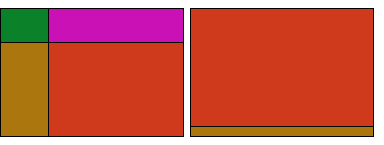
HiperVinculos Locales y Externos
Un hipervínculo, es una conexión directa entre dos espacios virtuales en el mundo digital. Es la forma más rápida que existe en internet de llegar de un punto a otro, con este viajamos a la velocidad de 1 clic.
Un hipervínculo o hiperenlace es un elemento de un documento electrónico que hace referencia a otro recurso, por ejemplo, a otro punto dentro del mismo o de otro documento. Los hipervínculos nos permiten leer de documentos de manera no secuencial e incluso, puede conducirnos a otros documentos (p. ej. una página Web).
Tipos de hipervínculos.
Un hipervínculo o hiperenlace es un elemento de un documento electrónico que hace referencia a otro recurso, por ejemplo, a otro punto dentro del mismo o de otro documento. Los hipervínculos nos permiten leer de documentos de manera no secuencial e incluso, puede conducirnos a otros documentos (p.ej. una página Web). Por decirlo llanamente los hipervínculos nos permiten hacer “saltos” dentro de un documento o entre documentos.
Aunque hasta ahora quizás no supieses que era un hipervínculo los llevas usando muchos años. Los hipervínculos o hiperenlaces son el elemento clave de la web. Las páginas web nos permiten "saltar" de unas a otras por medio de enlaces. Al texto que contiene hipervínculos se le suele llamar hipertexto.
Es importante recalcar que los hipervínculos sólo tienen sentido cuando el documento que estamos preparando va a ser leído a través de un dispositivo electrónico. Esto es cada vez más habitual gracias a los ordenadores y especialmente a las tabletas, libros electrónicos y teléfonos inteligentes. De hecho, las posibilidades que ofrecen los hiperenlaces suponen una ventaja de los documentos hipertextuales respecto a los documentos en formato papel.
Los hipervínculos se suelen representar como un texto en color azul y subrayado. Si el hipervínculo ha sido visitado, el texto aparecerá normalmente en morado. Este es el aspecto de un documento con un hipervínculo sin visitar y otro visitado.
Sofware de edicion de sitios web
Un editor de páginas web o editor HTML, es una aplicación diseñada con el fin de facilitar la creación de documentos HTML. Aunque el código HTML de una página web puede ser escrito con un simple editor de texto plano, los editores de páginas web específicos ofrecen numerosas funciones adicionales, como editor WYSIWYG o soporte para CSS y JavaScript.
Un editor de páginas web es una herramienta o aplicación desarrollada a fin de simplificar la generación y elaboración de documentos HTML o XHTML. Existen varios tipos de editores y de diferente complejidad:
Editor de texto sin formato
El editor de texto plano o texo sin formato, es de uso muy sencillo. Los programas más sencillos son similares a Notepad o Bloc de Notas, y con cualquiera de ellos se puede escribir las líneas de código necesarias para crear un sitio web.
Sin embargo, existen editores de texto plano avanzados que diponen de numerosas características avanzadas, como resaltado y coloreado de sintaxis, así como botones para insertar y combinar etiquetas HTML, como es el caso de Kate o Gedit (GNU/Linux).
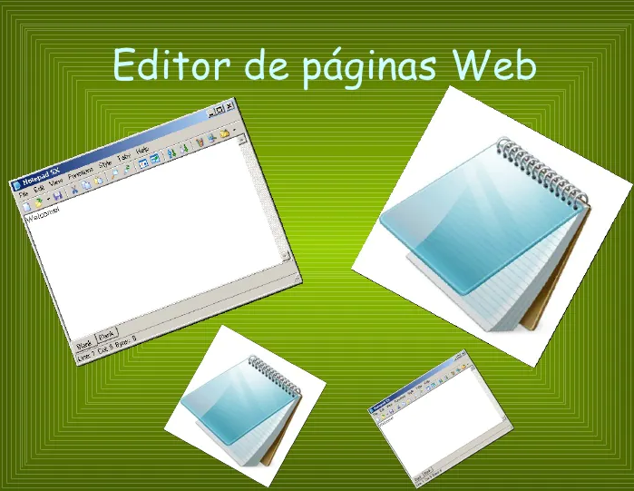
Publicador de sitios Web
La publicación web, o "publicación en línea", es el proceso de publicación de contenido en Internet. Incluye crear y cargar sitios web, actualizando páginas weby publicación blogs en línea. El contenido publicado puede incluir texto, imágenes, videos y otros tipos de medios.
Para publicar contenido en la web, necesita tres cosas: desarrollo web 1) programa., 2) una conexión a Internet y 3) a servidor web. El software puede ser un programa de diseño web profesional como Dreamweaver o una interfaz simple basada en web como WordPress. La conexión a Internet sirve como medio para subir el contenido al servidor web. Los sitios grandes pueden usar un dedicado alojamiento web, pero muchos sitios más pequeños a menudo residen en servidores compartidos, que alojan múltiples sitios web. La mayoría de los blogs se publican en servidores web públicos a través de un servicio gratuito como Blogger.
Dado que la publicación en la web no requiere materiales físicos como papel y tinta, no cuesta casi nada publicar contenido en la web. Por lo tanto, cualquier persona con los tres requisitos anteriores puede ser un editor web. Además, la audiencia es ilimitada, ya que cualquier persona del mundo con conexión a Internet puede ver el contenido publicado en la web. Estas ventajas de la publicación web han llevado a una nueva era de publicación personal que antes no era posible.
Obtener alojamiento y un nombre de dominio
Si deseas un control total sobre tu sitio web publicado, probablemente necesitarás gastar dinero para comprar:
Alojamiento (Hosting) — espacio de almacenamiento alquilado en el servidor web de una compañia de alojamientos. Pones los archivos de tu sitio web en este espacio, y el servidor web suministra el contenido a los usuarios que lo solicitan.
Un nombre de dominio — dirección única mediante la cual la gente puede encontrar tu sitio web, como https://www.mozilla.org, o https://es.wikipedia.org/. Puedes tomar en alquiler el nombre de tu dominio durante algunos años en un registrador de dominio.

Servidor
Un servidor web (server) es un ordenador de gran potencia que se encarga de “prestar el servicio” de transmitir la información pedida por sus clientes (otros ordenadores, dispositivos móviles, impresoras, personas, etc.)
Los servidores web (web server) son un componente de los servidores que tienen como principal función almacenar, en web hosting, todos los archivos propios de una página web (imágenes, textos, videos, etc.) y transmitirlos a los usuarios a través de los navegadores mediante el protocolo HTTP (Hipertext Transfer Protocol).
¿Para qué sirve un servidor web en Internet?
El rol principal de un servidor web es almacenar y transmitir el contenido solicitado de un sitio web al navegador del usuario.
Este proceso, para los internautas no dura más que un segundo, sin embargo, a nivel del web server es una secuencia más complicada de lo que parece.
Para cumplir con sus funciones el servidor deberá tener la capacidad de estar siempre encendido para evitar interrumpir el servicio que le ofrece a sus clientes. Si dicho servidor falla o se apaga, los internautas tendrán problemas al ingresar al sitio web.
¿Cómo funciona un servidor web?
La comunicación entre un servidor y sus clientes se basa en HTTP, es decir, en el protocolo de transferencia de hipertexto o en su variante codificada HTTPS.
Para saber cómo funciona, primero es necesario conocer que el web server está permanentemente en espera de una solicitud de información.

dominio
Un dominio web es el nombre único que recibe un sitio web en internet. Este nombre identifica a una página web concreta sin que puedan existir dos o más sitios web que compartan el mismo nombre de dominio
El dominio web de tu sitio web es esencialmente el equivalente a una dirección física. De la misma manera que un satélite necesita una dirección o un código postal para dar direcciones, un navegador web necesita un nombre de dominio para dirigirte a un sitio web.
Un dominio de internet se forma a partir de dos elementos principales. Por ejemplo, el nombre de dominio Facebook.com consiste del nombre del sitio web (Facebook) y la extensión del dominio (.com). Cuando una empresa (o una persona) compra un dominio web, puede especificar a qué servidor apunta el nombre de dominio
Los dominios funcionan actuando como un atajo para llegar al servidor que aloja tu sitio web.
Sin un dominio, cualquiera que quisiera visitar tu sitio web tendría que escribir la dirección IP completa. Pero el problema es que una dirección IP es difícil de memorizar o incluir en los materiales publicitarios.
Como puedes ver, jugar con los valores predeterminados del servidor y las direcciones IP puede ser confuso y demorado. Es por eso que la gran mayoría de propietarios de sitios web optan por utilizar un servicio como Hostinger que ofrece dominios incluidos en paquetes de alojamiento web anuales.
Los dominios también pueden usar redireccionamientos, lo que esencialmente te permite especificar que si las personas visitan tu dominio, son reenviadas automáticamente a otro.
alojamiento y publicacion
El alojamiento web (en inglés web hosting) es el servicio que provee a los usuarios de Internet un sistema para poder almacenar información, imágenes, vídeo, o cualquier contenido accesible vía web. Es una analogía de «hospedaje o alojamiento en hoteles o habitaciones» donde uno ocupa un lugar específico, en este caso la analogía alojamiento web o alojamiento de páginas web, se refiere al lugar que ocupa una página web, sitio web, sistema, correo electrónico, archivos etc. en internet o más específicamente en un servidor que por lo general hospeda varias aplicaciones o páginas web.
Las compañías que proporcionan espacio de un servidor a sus clientes se suelen denominar con el término en inglés web host.
Se puede definir como «un lugar para tu página web o correos electrónicos», aunque esta definición simplifica de manera conceptual el hecho de que el alojamiento web es en realidad espacio en Internet para prácticamente cualquier tipo de información, sea archivos, sistemas, correos electrónicos, videos etc.
El hospedaje web aunque no es necesariamente un servicio, se ha convertido en un lucrativo negocio para las compañías de Internet en todo el mundo. El hosting u hospedaje es un espacio en un servidor en el cual se guardará toda la información de tu sitio web y estará activo durante un año. Se puede definir como "un lugar para tu página web o correos electrónicos", aunque esta definición simplifica de manera conceptual el hecho de que el alojamiento web es en realidad espacio en Internet para prácticamente cualquier tipo de información, sea archivos, sistemas, correos electrónicos, videos, etcétera.
Alojamiento gratuito
El alojamiento gratuito es extremadamente limitado comparado con el alojamiento de pago. Estos servicios generalmente agregan publicidad en los sitios además de contar con recursos muy limitados (espacio en disco, tráfico de datos, uso de CPU, etc.)
Solucion Web
Estas soluciones son un conjunto de servicios destinados a proporcionar una alta visibilidad en internet, un diseño atractivo, sencilla navegabilidad, una alta conversión visita-cliente y accesibilidad desde dispositivos móviles. Y es que nuestro desarrollo web a través del CMS permite gestionar con facilidad cualquier cambio necesario para su sitio. Dichos cambios consisten en modificar sus imágenes, cambiar o añadir textos, estructurar de forma más clara el diseño web para facilitar la navegación y crear nuevos apartados o servicios que ofrecer a sus clientes y hasta incluir enlaces
Nos encargamos de todos los procesos relativos al desarrollo web, incluyendo la imagen corporativa, ya que nos gusta tener una relación estrecha con nuestros clientes para mostrar así todo el potencial de su negocio en la red. La solución web integral que le ofrecemos está preparada y adaptada para los principales motores de búsqueda: Google, Yahoo y Bing, con el fin de beneficiar el posicionamiento natural en buscadores.
En la actualidad aún nos podemos encontrar con empresarios y directores de negocios que afirman convencidos que no es tan importante contar con una página web, ya que para ellos es suficiente llevar su negocio de manera física, sintiéndose más cómodos con los métodos tradicionales. Sin embargo, éste no es el enfoque correcto, ya que en la actualidad las personas cada vez más realizan sus compras (o decisiones de compra) a través de Internet. Por este motivo las empresas deben solicitar una solución web profesional para que ésta sea lo más eficiente posible y cuente con una usabilidad correcta, de forma que los clientes puedan navegar por ella de una forma sencilla y sin complicaciones.
Plataformas web
Una plataforma web es más que una página web. Una plataforma incluye elementos adicionales a la página web tales como aplicaciones, carritos de compras, formularios, convertidores, instancias de aprobación y alguna otra solución específica para la necesidad del cliente y el mercado. Estos elementos pueden ser públicos o privados, tales como sistemas de comunicación interna o inventarios.
Nuestra firma desarrolla proyectos o plataformas a partir de los requerimientos de clientes y en todo tipo de lenguajes, usando ASP.net, HTML, HTML5, Joomla, WordPress, Drupal, Zencart, Magento, etc. Al ser un producto a medida, nuestro servicio incluye un seguimiento continuo durante el proceso y después de la entrega. Capacitamos al personal que se involucrará en el manejo e implementamos manuales y tutoriales para complementar la capacitación y entrenamiento de nuevo personal.
El objetivo principal de un sitio web es entregar información. Por lo tanto, consumir contenidos es la tarea más importante hacen los usuarios en este tipo de plataformas.
Esta idea puede sonar confusa, ya que todos los sitios incluyen algún llamado a la acción adicional, como por ejemplo realizar un contacto o suscribirse a un newsletter. La diferencia está en que estas interacciones representan una parte pequeña y usualmente se pueden lograr solo después de guiar al usuario a través del contenido.
Los sitios web tienen además varias páginas interconectadas y requieren un gestor de contenidos
Conceptos Basicos De Herramientas Multimedia
Herramientas de Dibujo y Pintura
Son aquellos programas (software) que nos permiten trabajar con imágenes digitalizadas en el computador. Dichas imágenes pueden ser realizadas desde cero usando los programas de diseño, ya sea haciendo uso de sencillas Figuras geométricas que hacen una composición o de técnicas de manejo mucho más avanzadas que permiten utilizar el programa como si se contara con un lienzo y pinceles, pinturas y demás herramientas que servirían para el dibujo tradicional. Por otra parte también es posible trabajar con imágenes que han sido capturadas mediante cámaras fotográficas o digitalizadas desde elementos tales como scanner.
Existen múltiplos programas de creación y edición de dibujos sencillos y simples que pueden llegar a cubrir la mayor parte de casos de uso básicos relacionados con imágenes. Desde Mancomún destacamos LazPaint y Kolourpaint. Ambas tienen como público todos aquellos usuarios que necesiten hacer pequeños y simple retoques en fotos, imágenes o dibujos que no tengan mucha complejidad.
Kolourpaint
Kolourpaint es el clon de paint dentro del proyecto KDE e integrado en el escritorio Plasma formando parte de las KDE Applications, tiene una interfaz muy sencilla y es un programa que nos permite pintar y dibujar diagramas, manipular imágenes e iconos con o sin transparencias. Kolourpaint cuenta con diversas herramientas para pintar, entre las que se encuentran brochas, pinceles, varias formas geométricas, texto
LazPaint
LazPaint es un editor de imágenes simple, que comenzó a desarrollarse para demostrar y probar la biblioteca de procesamiento de imágenes BGRABitmap. Se trata de una aplicación multiplataforma contando con versiones para Windows, GNU/Linux y Mac Los.
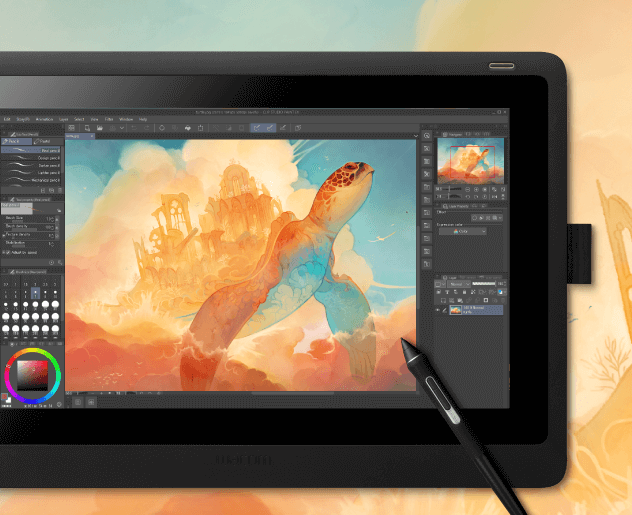
Mapa Bits
Un mapa de bits es una matriz de bits que especifican el color de cada píxel en una matriz rectangular de píxeles. El número de bits dedicados a un píxel individual determina el número de colores que se pueden asignar a ese píxel. Por ejemplo, si cada píxel se representa mediante 4 bits, a un píxel determinado se le puede asignar uno de los 16 colores diferentes (2^4 = 16). En la tabla siguiente se muestran algunos ejemplos del número de colores que se pueden asignar a un píxel representado por un número determinado de bits.
os archivos de disco que almacenan mapas de bits normalmente contienen uno o varios bloques de información que almacenan información como el número de bits por píxel, el número de píxeles de cada fila y el número de filas de la matriz. Este archivo también puede contener una tabla de colores (a veces denominada paleta de colores). Una tabla de colores asigna números en el mapa de bits a colores específicos. En la ilustración siguiente se muestra una imagen ampliada junto con su mapa de bits y su tabla de colores. Cada píxel se representa mediante un número de 4 bits, por lo que hay 2^4 = 16 colores en la tabla de colores. Cada color de la tabla se representa mediante un número de 24 bits: 8 bits para rojo, 8 bits para verde y 8 bits para azul. Los números se muestran en formato hexadecimal (base 16): A = 10, B = 11, C = 12, D = 13, E = 14, F = 15.
Formatos de archivo de gráficos
Hay muchos formatos estándar para guardar mapas de bits en archivos de disco. GDI+ admite los formatos de archivo de gráficos descritos en los párrafos siguientes.
Formato JPEG (Joint Photographic Experts Group)
JPEG es un esquema de compresión que funciona bien para escenas naturales, como fotografías examinadas. Se pierde cierta información en el proceso de compresión, pero a menudo la pérdida es imperceptible para el ojo humano. Los JPEG almacenan 24 bits por píxel, por lo que son capaces de mostrar más de 16 millones de colores. Los JPEG no admiten la transparencia ni la animación.
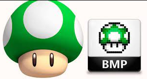
Dibujo Vectoriales
En la disciplina del diseño gráfico, el dibujo vectorial es un concepto muy recurrente en tanto que se trata de un de los pilares esenciales del estado actual de la profesión.
En la actualidad, los artistas del diseño gráfico proyectan su imaginación y creatividad a través de múltiples herramientas digitales, mostrando una soltura similar a la que, hace mucho tiempo, y aún a día de hoy, demostraban los pintores con sus pinceles y su paleta física de colores. La gran diferencia ahora es el soporte (el lienzo ha sido sustituido por la pantalla) y la imagen, que ahora se trata de dibujo vectorial.
Básicamente, el dibujo vectorial no es otra cosa que una imagen gráfica que ha sido creada a partir de elementos de forma geométrica como líneas, segmentos o polígonos, que han sido definidos como vectores. Estos elementos geométricos cuentan con unos determinados atributos en cuanto a forma, posición, color, etcétera, que han sido establecidos a partir de fórmulas matemáticas.
La imagen o el dibujo vectorial ha experimentado un tremendo auge, y la razón fundamental de ello se encuentra en que posee una enorme ventaja frente a la imagen de mapa de bits: la imagen vectorial puede ser ampliada tanto como deseemos sin que su calidad sufra pérdida alguna. Frente a ello, ya sabemos que el resto de imágenes digitales se pixelan a medida que las “estiramos”. La clave de esta enorme ventaja que es la escalabilidad de las imágenes vectoriales radica en que éstas están compuestas a base de puntos sobre un espacio virtual que se van uniendo entre sí a través de trazos que más tarde son rellenados. Así, las imágenes obtenidas resultan ser de una enorme calidad, y coherentes en cualquier tamaño.
Animacion 2D y 3D
Conocer las diferencias entre la animación 2D y la animación 3D puede ayudarte a determinar qué área de la animación te interesa más y el tipo de habilidades que necesitarás desarrollar para trabajar en el mundo de la animación.
En la animación 2D tradicional, todo lo que ves se dibuja a mano, fotograma a fotograma. En la animación 3D, se animan personajes y objetos en un entorno 3D utilizando un software específico. Aunque el dibujo es un beneficio adicional, no es una necesidad en la animación 3D.
En términos de experiencia visual, la animación 2D es comparativamente poco realista. Además, se procesa en un espacio bidimensional, tratando solo con la longitud y el ancho. En 3D, las imágenes creadas se definen en 3 dimensiones: largo, ancho y alto. Este hecho les otorga una sensación realista y ayuda a crear una percepción de profundidad.
¿Qué es la Animación 2D?
En la animación 2D, los animadores usan personajes, efectos visuales y fondos para crear una ilusión de movimiento en un espacio bidimensional. Para ello, secuencian dibujos individuales juntos, durante un período de tiempo definido.
¿Qué es la Animación 3D?
La animación 3D se utiliza para generar objetos tridimensionales para varios medios. Pixar, por ejemplo, es conocida por crear largometrajes y cortometrajes increíbles utilizando exclusivamente animación 3D. Con ella crea personajes, entornos, vehículos, monstruos y cualquier cosa imaginable.
Edicion de fotografia
No necesariamente debes dedicarte a disciplinas como editorial, moda, fotomontajes o restauración para valorar la importancia en la edición de fotografía.
Con la fotografía digital se facilitó el proceso de edición de fotos, haciendo casi obligatorio este paso.
El revelado fotográfico que antaño se realizaba en una habitación oscura y con químicos hoy es un proceso digital que forma parte de la creación de todas las fotografías profesionales.
Cuando se habla de edición de fotos, procesado y retoque digital, Photoshop es el programa estrella. Pero esta excelente herramienta tiene unos cuantos inconvenientes también: precio carísimo, muy complejo de usar al principio, consume muchos recursos de la memoria del ordenador, entre otras desventajas. Si buscas una alternativa al Photoshop hoy te traigo 19. A continuación, te dejo un listado de programas para editar fotos gratis, ligeros, muchos online, y relativamente más fáciles de usar que Photoshop.
PROGRAMAS PARA EDITAR FOTOS
Gimp
Pixlr
Photoshop Online Pro
ImageForge Standard
Fotor
Edicion de Video No lineal
Se denomina sistema de edición no lineal en la terminología del vídeo y sistema de montaje no lineal en la terminología del cine a un sistema de edición por el cual se pueden ampliar o reducir cualquier secuencia de una edición o montaje sin alterar ni dañar las secuencias o cuadros posteriores. Si además se puede acceder a cualquier punto del material bruto instantáneamente, sin recorrer las tomas previas, se denomina Sistema de edición no lineal de acceso aleatorio. En ocasiones es considerado equivalente en el ámbito del audio/video al procesamiento de textos, por lo cual también se lo denomina edición de vídeo en desktop en el ámbito de los consumidores
La edición lineal fue el primer sistema de edición que se usó al difundirse los sistemas de vídeo, pero sus limitaciones hicieron que dicho sistema fuera sustituido por el sistema de edición no lineal a partir de la década de 1980. Con la mejora en la informática, los algoritmos de compresión y las grabaciones digitales fueron apareciendo sucesivas generaciones de sistemas no lineales basados primero en cintas de vídeo, después en discos láser y más tarde en distintas generaciones de discos magnéticos. Con las sucesivas mejoras también se buscó abaratar el proceso de edición proporcionando subproductos intermedios como cinta de visionado, lista de decisiones de edición (EDL por sus siglas en inglés) o lista de corte de negativo; hasta que las últimas generaciones ya conseguían realizar el proceso completo.
La edición no lineal sin acceso aleatorio es la primera que apareció poco después de inventarse los magnetoscopios y el vídeo como tal. En cierto modo era la opción natural pues el único proceso conocido hasta entonces que era el de las películas con fotogramas. Este sistema consistía en cortar y empalmar unas partes del material a otras, si se necesitaba reducir la duración podía volverse a cortar el fragmento no deseado y empalmar el resto al siguiente, lo mismo en el caso de aumentar unos segundos, se cortaba el pedazo que se deseaba incluir, se separaban las dos partes donde se quería incluir dicho pedazo y todo se unía de nuevo.
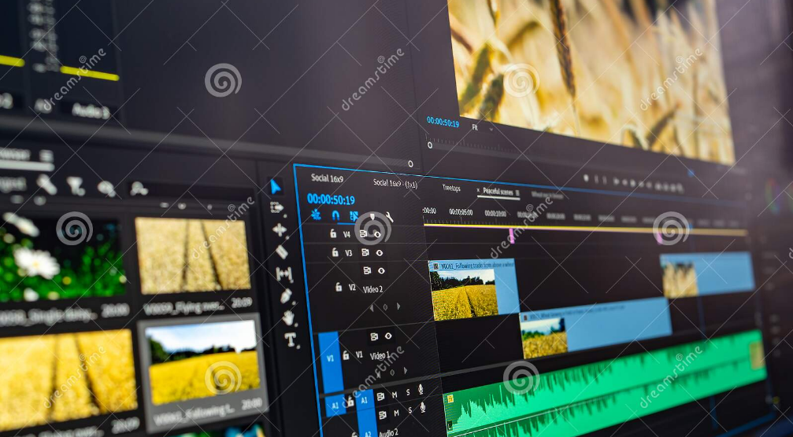
Software de edicion grafia
Un editor de gráficos rasterizados o editor de imágenes rasterizadas es una aplicación que permite al usuario crear y editar imágenes de gráficos rasterizados de forma interactiva y almacenarlas en la computadora en un formato de archivo gráfico, como JPEG, PNG, GIF y TIFF.
Para ver imágenes, generalmente es preferible usar un visor de imágenes en vez de un editor de gráficos rasterizados.
Algunos editores están diseñados específicamente para la edición de imágenes fotorrealísticas, como el popular Adobe Photoshop, mientras que otros están más orientados a las ilustraciones artísticas, como Adobe Fireworks.
Actualmente hay programas y recursos especializados que se adaptan a las necesidades de las empresas para este ámbito: optimizan y agilizan sus servicios de diseño gráfico de acuerdo con los recursos disponibles.
Por eso que en este artículo queremos compartir contigo algunas de estas alternativas de diseño gráfico que pueden ayudarte a lograr los resultados que buscas.
Sketch
Affinity
Adobe Photoshop CC
Adobe Illustrator
Adobe InDesign
Corel Draw
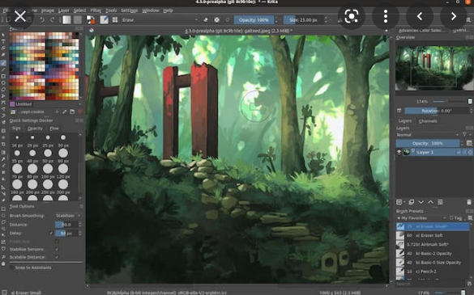
Edicion de Sonido
Un editor de sonido es un creativo responsable de seleccionar e integrar grabaciones de sonido en preparación para la mezcla o grabación original del sonido final de un programa de televisión, película, videojuego, o cualquier producción que involucre sonido grabado o sintético
Por lo general, los programas de edición de sonido se encuentran en computadoras en estudios de audio donde el sonido se edita o graba, como en estudios de grabación de música, estaciones de radio, escenarios de sonido de televisión o instalaciones de edición de audio y video. Por lo general, las personas que usan programas de edición de sonido se llaman ingenieros de sonido, ingenieros de audio o ingenieros de grabación, pero algunos aficionados a la música tienen programas profesionales de edición de audio en una computadora en casa. Muchos colegios y universidades ofrecen acceso a computadoras con programas de edición de audio para estudiantes que estudian medios relacionados con el audio
Los editores de sonido se utilizan en muchas partes del proceso de producción de sonido. Cuando un ingeniero de sonido comienza a crear una grabación de audio, graba el sonido en el editor de sonido o importa el sonido previamente grabado al programa de edición. Si tiene varias fuentes de sonido que quiere combinar, introducirá otros sonidos en otras pistas. Las pistas son sonidos individuales dentro de un proyecto de audio que se pueden reproducir juntos pero editar por separado para organizar la pieza completa. Dentro del editor de sonido, el ingeniero de audio realiza la mezcla de sonido, que es el proceso de ajustar los sonidos individuales para que se mezclen bien dentro de la pieza.
mejores programas de audio para grabar, editar, mezclar y más
Audacity
Adobe Audition.
WavePad.
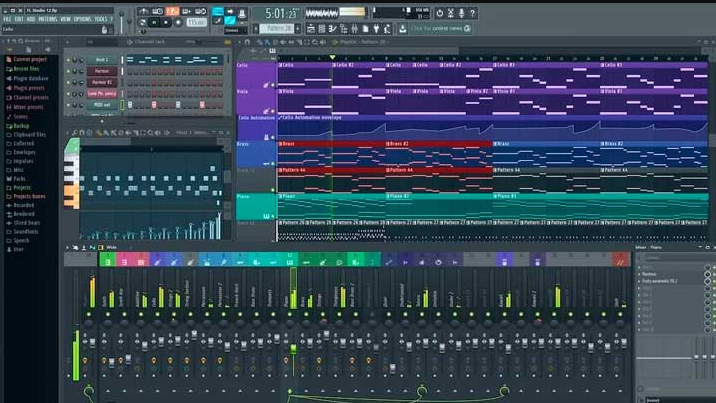
Aplicacion de edicion y diseño de Solucione Web
Manejadores de contenido de Imagen Audio y Video
Manejadores de contenido de audio y video
Son programas informáticos que nos ayudan en la creación y modificación de contenidos digitales.
Joomla
es un sistema de gestión de contenidos que permite desarrollar sitios web dinámicos e interactivos. Permite crear, modificar o eliminar contenido de un sitio web de manera sencilla a través de un "panel de administración"
WordPress
es un sistema de gestión de contenidos lanzado el 27 de mayo de 2003, enfocado a la creación de cualquier tipo de página web. Originalmente alcanzó una gran popularidad en la creación de blogs, para luego convertirse en una de las principales herramientas para la creación de páginas web comerciale
Squarespace
es un sistema de administración de contenidos todo en uno, también conocido como CMS. Con una única suscripción podrás crear un sitio web, administrar el contenido, registrar dominios, vender productos y mucho más.
Drupal
es un sistema de gestión de contenidos o CMS libre, modular, multipropósito y muy configurable que permite publicar artículos, imágenes, archivos y que también ofrece la posibilidad de otros servicios añadidos como foros, encuestas, votaciones, blogs, administración de usuarios y permiso
Moodle
Moodle es una herramienta de gestión de aprendizaje, o más concretamente de Learning Content Management, de distribución libre, escrita en PHP.
originalmente alcanzó una gran
popularidad en la creación de blogs, para convertirse con el tiempo en una de las principales herramientas para la creación de páginas web comerciales.
es un sistema de gestión de contenidos que permite desarrollar sitios web dinámicos e interactivos. Permite crear, modificar o eliminar contenido de un sitio web de manera sencilla a través de un "panel de administración".
es un Sistema de Gestión de Contenidos, como mismo lo es WordPress, Blogger, u otros menos conocidos como Drupal y Joomla.
Con Squarespace puedes crear sitios web de diferentes tipos como blogs, tiendas online, o portafolios.
es un sistema de gestión de contenidos o CMS libre,1 modular, multipropiedad y muy configurable que permite publicar artículos, imágenes, archivos y que también ofrece la posibilidad de otros servicios añadidos como foros, encuestas, votaciones, blogs, administración de usuarios y permisos.
es un software de código abierto, así que no hay que pagar licencias. Moodle te va a permitir crear perfiles de estudiantes, profesores, o
Software de edidicon de paginas web en ambiente Privado y libre
La dificultad que había anteriormente para crear una página web era mucho mayor que en la actualidad.
A día de hoy la cantidad de páginas webs o blogs disponibles en Internet se cuentan por millones, y gracias a las herramientas actuales con las que poder crear y diseñar un sitio web, cualquier usuario es capaz de construir una página en cuestión de horas.
Antes de que te decidas por un software u otro, recomiendo que te informes acerca de los diferentes tipos de sitios web que existen para que sepas cuál se adapta mejor a tus necesidade
Entre estos programas para crear páginas web, existen de todos los tipos, como editores de código HTML o herramientas web especializadas que te ayudarán a crear tu página web sin mucho esfuerzo mediante el uso de editores visuales.
En el post de hoy conoceremos las mejores opciones cuando busques programas para hacer páginas web que encontrarás en el mercado. Te garantizo que en este post encontrarás varias opciones interesantes, para que puedas lograr el éxito en el campo del diseño, y así tener siempre una herramienta confiable para hacerlo.
AMBIENTE PRIVADO
Encontramos otros nombres para el software propietario, como software privativo o software de código cerrado. Este tipo de software limita las posibilidades del usuario a modificarlo e incluso en su uso. Sin embargo, el software libre, en contraposición al anterior, es aquel que se distribuye libremente. También es conocido como software de código abierto. En él, el usuario tiene plena libertad a la hora de usar el software, distribuirlo y/o modificarlo, con lo que se consigue un mayor desarrollo en las mejoras del primitivo.
AMBIENTE LIBRE
Cuando hablamos de software libre hacemos referencia a las tres libertades que este posee, que son:
Libertad de uso.
Libertad de distribución.
Libertad de adaptación y mejora.
El software libre es afín a la idea de aldea global, donde la comunidad se beneficia mutuamente, creciendo sin restricciones. Pero el término libre no es sinónimo de gratuito, lo que ocurre es que, tal vez, asociemos ambos conceptos por la traducción literal del anglicismo “free”. Es decir, el software libre puede ser distribuido comercialmente.
Un principio básico en el software libre es nombrar la autoría, perspectiva que no debe ser perdida nunca, incluso aunque sea gratuito. El autor tiene la protección que el ordenamiento le brinda para con su obra. Sin embargo, éste puede disponer de la misma y realizar, por ejemplo, una compraventa, por la que transmite la propiedad a cambio de una contraprestación dineraria. En este caso, el comprador puede usar el software sin ningún tipo de restricciones.
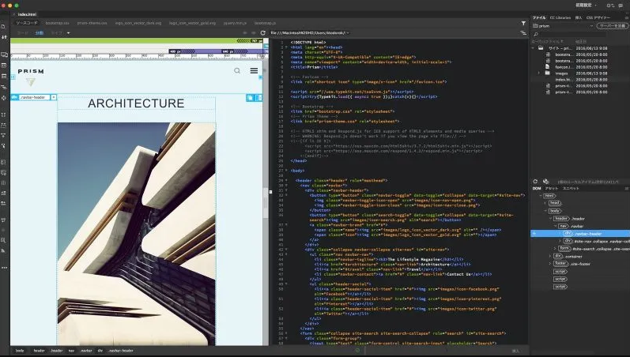
si quiere ver mas informacion de uno de estos temas de click al boton VIDEO DE EXPLICACION DE UN TEMA